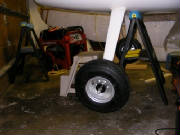

|

I inventoried the kit components for the wheels and brakes and
studied the assembly sequence. I used the axle to position the small and large joining plates on either side of the
landing gear strut. I then fine-tuned the mounting holes in the strut to permit the insertion of four 5 mm bolts on
each assembly. I then bolted the joining plates in place and secured the nuts with Loctite 262.
At
this point I require a long 5 mm drill bit to drill the holes in the strut necessary to insert the brake anti-rotation pins.
I ordered long 5 mm, 6 mm, 7 mm and 8 mm bits from McMaster-Carr. I should have ordered these bits earlier, but for
some reason couldn't find them easily in my initial web search.
This is the large joining plate on the inside end of the
axle. It will later be used to secure the wheel pant.
The proper assembly of the parts is not completely clear in the kit
manual, but my trial assembly leads me to believe that the 1 mm thick aluminum washer is supposed to go between the brake
and the wheel, acting as a spacer and as a retainer for the inner wheel bearing, as shown here.
The trial assembly also indicates that the 2 mm thick washer
belongs under the axle retaining nut on the inner end of the axle as shown here.
The kit inventory lists a 52mm
O-ring that I could not find. It would be the proper size to fit inside the outer wheel bearing retainer cup as a way
to minimize the potential loss of wheel bearing grease; however it is not mentioned or pictured in the kit manual. I
assume that it was once part of the kit, but has since been found unnecessary.
I have sent an email to Pipistrel
requesting confirmation and clarification of these items.
Feb 12, 2007
Tomaz confirmed that my assumptions are correct on the placement
of the washers. He also said that the missing O-ring should already be installed inside the bearing retainer
cup. Upon closer inspection, sure enough, it's there. When I looked inside the cup yesterday, I
missed the black O-ring protruding slightly from the side of the black plastic cup.
Feb 15, 2007 1.1 hours
My long drill bits arrived from McMaster Carr. I used
the long 5 mm bit to drill through the pre-drilled holes in the axle hub into the landing gear leg for the brake
anti-rotation pins. I marked the bit with masking tape so that the depth of the hole allowed 1 cm of each
pin to protrude from the hub, matching the corresponding holes in the brake assembly.
I then slid the brake assembly onto the axle and tapped it into
place with a few light raps of a hammer and a block of wood on each side of the axle. The brake is installed so that
the fluid bleed nipple points up and the threaded hole for the for the brake line fitting faces forward (the left and
right brake assemblies are therefore different). Then I slid the brake shoe and the spacer onto the axle.
Here you see the brake disc on the inside of the main wheel.
The way these brakes work is that the shoe is pressed outward from the brake assembly by hydraulic pressure under a ring behind
the shoe. The shoe rubs against the disc on the wheel to apply the braking action. The resultant braking pressure
on the wheel is transfered to the outer wheel bearing, which doesn't seem ideal to me, but it seems to be working fine
in service, and I had no problems with braking during my flights with Vance Turner in California or with Tine at the factory.
Michael Coates says that a more traditional disc/caliper design was in use at first, but it was somewhat too effective,
resulting in some Pipistrels on their noses with broken propellers. So, I think the situation here is, "If it's
not broken, don't try to fix it."
I slid the wheel into place, packed the hub with wheel bearing
grease, packed the tapered outer wheel bearing with grease, and slide the bearing over the axle into the hub.
I then put some more grease inside the bearing dust cover, slid
it over the axle and installed the machined stop nut that holds everything on the axle. The first picture on the left
shows the machined shoulder on the nut that allows it to go through the dust cover and contact the wheel bearing directly.
The nut is tightened sufficiently to take up the slack, but not so tight as to put much load on the tapered outer bearing.
The inner wheel bearing is a straight sealed bearing that carries any side loads directly through the bearing hub.
I then cleaned all the residual grease from the axle with acetone
and installed the spacer for the wheel pant, using Loctite 243 (medium strength). The Loctite 243 will allow me
to remove the wheel periodically to service the wheel bearing and brake assembly.
Last, I installed the steel washer and the axle retainer lock
nut on the inside end of the axle, using Loctite 262. I then marked both nuts with red paint to make it easy to detect
if something is coming loose. The kit manual says this nut is torqued to 6 newton-meters; however, the factory has
confirmed that this should be 60 newton-meters (44 foot-pounds).
The same steps were completed for the other
wheel-brake assembly.
If you aren't aware of it, the Google web site has a built in converter for every form
of measurement that I've thrown at it. It's very intuitive. I simply typed, "convert 60 newton meters
to foot pounds" into the search field, hit find, and it came back with the answer: "60 newton meters = 44.253729
foot pounds". Very handy.
Feb 17, 2007 2.0 hours
With Mary's help, I positioned the main gear leg under the
fuselage to check the fit and the line-up of the mounting holes in the gear leg and the fuselage. Everything fit perfectly,
although the holes through the fuselage floor through which the brake lines pass into the gear leg had to be enlarged slightly.
The kit manual makes it clear that the gear mounting is different between the Virus and Sinus, but it took the trial
fit to clarify the way that the brake lines pass into the fuselage on the Sinus, through the holes shown here.
I chamfered the edges of these holes with my rotary tool and a round file to ensure that the brake line will not chafe on any
sharp edges.
Next I drilled holes in the two aluminum gear mount reinforcing plates
to match the holes in the fuselage. I then applied silicone caulk around the gear attach points as shown in the kit
manual, and Mary helped me again position the gear under the fuselage while I inserted the 10 mm mounting bolts, washers and
nuts. I secured the nuts with Loctite 262 and torqued them down.

Here is the gear mounted in the fuselage, which is still resting
on a padded saw horse.
....and here is the fuselage resting on the gear for the
first time. This feels like an important milestone, with the plane now starting to look more like a real aircraft.
I will leave the tail propped up for awhile, because it is much easier to work inside the fuselage with it in a level attitude.
I'm now looking forward to completing the installation of the rudder controls and tail wheel, which will allow
me to move the fuselage around easily for the later construction steps.
Feb 28, 2007 1.0 hours - Install tail wheel
Received email, drawings and photos from Tomaz explaining the
Sinus tail wheel installation. Because of interference with the aft fuselage bulkhead, the tail wheel attach bolt could
not be inserted from the top. The email confirmed that it is correct to remove a small amount of material from the bulkhead
in order to mount the tail wheel as shown in the factory photos. The photo here shows a Sinus at the factory, indicating
how the tail wheel steering springs are connected between the rudder and the tail wheel.
So, I removed some material from the bulkhead with my rotary
tool and installed the tail wheel.
The bearing retainer, which you can see here just above the steering
arm, has a small shoulder in the center. This shoulder points down, which allows the tail wheel spring detent to disengage
for full swiveling during ground handling.
So now, with the plane on all three wheels, it is easy to move
around for access during the remainder of the construction. Most of the time I will keep the tail wheel supported on
a stool, because it is much more comfortable to work inside the fuselage when it is relatively level.
June 5th, 2010 2.5 hours - Install brake lines
I had previously routed nylon brake line through the right landing
gear leg to the right wheel. I installed a brake fitting assembly into the right wheel brake and connected the brake
line to the fitting. I then screwed a brake fitting into the bottom of the right brake cylinder on the right side of
the cockpit and attached the brake line to that fitting. I greased the o-rings in the fittings and used Loctite 542
on the threads. Loctite 542 is specifically formulated to lubricate and seal the fine threads in hydraulic and pneumatic
fittings. Disconnecting the rudder pedal return springs
and laying the pedals flat on the cockpit floor makes this installation much easier.

I then routed nylon brake line through hole and grommet in the cockpit
floor in front of the center tunnel, then through the left landing gear leg to the left wheel. I installed a brake fitting
in the left brake assembly and connected the brake line to the fitting. Then I installed a brake fitting in the bottom
of the left brake cylinder on the right side of the cockpit and connected the brake line to that fitting.
I then installed two brake fittings in the upper threaded ports in
the right side brake cylinders and the last two fittings in the bottom of the left brake cylinders, which have the brake fluid
reservoirs. I then installed brake lines between the left and right side brake cylinders, as instructed by the kit manual.
I was careful not to over-tighten the threads in the aluminum brake fittings, but I found that it took
a fair bit of torque to clamp the compression fittings sufficiently to fully secure the brake lines in the fittings.
December 26th, 2010 1.1 hours - Bleed brake lines
I filled the brake system with DOT 4 brake fluid. The Pipistrel Service and Repair manual describes
the process for bleeding the brakes on page 70. I
used a Power Bleeder Model 1106 from Motive Products to push brake fluid through the left and right brakes, from the bleed
fitting at the wheel, through the lines to the reservoir. I had some help to remove fluid from the reservoirs on the
left rudder pedals, using a squeeze bottle, while pumping brake fluid through the lines until there were no more bubbles in
the lines and the brakes felt firm on both sides.
May 19th, 2011 1.2 hours - Replace landing gear attach bolts
The landing gear bolts supplied with the kit were not quite long enough. The ends of the bolts were
just flush with the face of the nuts, so I had ordered some longer bolts from Pipistrel awhile ago. Today I rigged my
hydraulic lift to take the weight off the wheels by lifting at the wing attach carry-through at the top of the cockpit.
With the wheels just touching the floor for stability, I removed the old bolts and installed the new ones. I was a bit
nervous about how this would work out, but it went quite easily.
September
17th, 2011 1.5 hours - Replace axle plate bolts
The bolts provided with the kit that go through the landing gear
axle plates on the gear legs did not extend beyond the nuts, so I had ordered some longer bolts from Pipistrel. I raised
the gear legs to take the weight off the wheels, removed the old bolts and installed the new bolts. I secured the nuts
with Loctite 262.
February 12th, 2012 2.3 hours - Install wheel
spats
I installed the wheel pants (spats) following the instructions
in the kit manual and applied the Pipistrel decals. I
installed the cowling just to get a look at the plane in its completed form. I removed the protective plastic from the door windows and tried the seating in the now-complete cockpit. Hey,
I'm getting really close!
|